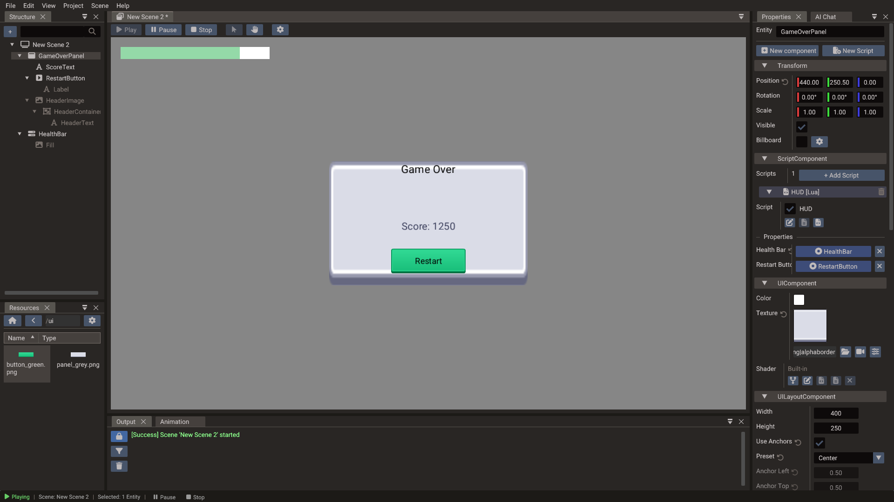
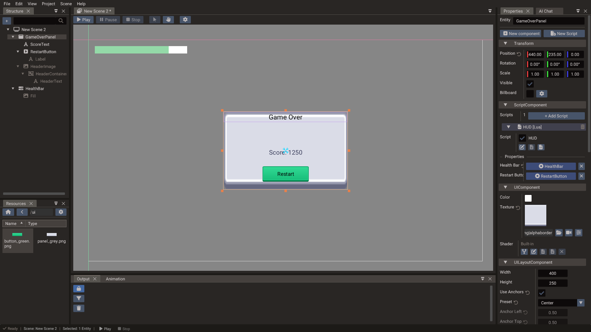

First UI Scene¶
This tutorial builds a UI scene — a separate scene dedicated to screen-space widgets — and shows how to layer it on top of a gameplay scene. UI scenes are the recommended approach for HUDs, menus, and overlays in Quantum.

What you will build¶
By the end of this tutorial you will have:
- A UI scene with a centered panel, a text label, and a Button
- A
Progressbaracting as a health bar in the top-left corner - The UI scene loaded on top of a gameplay scene
- A script that updates the health bar value from gameplay logic
1. Create a UI scene¶
- Open the editor and open or create a project that already has a gameplay scene
(
mainorlevel_01). - Choose Scene → New Scene → UI Scene.
- Save it as
scenes/hud.scene.
A new UI scene starts empty and draws through a built-in UI camera that frames the project's canvas.
2. Set the canvas size¶
The canvas is shared by every scene in the project. Open
Project → Project Settings → Canvas, set Canvas Width / Height to your design
resolution — for example 1920 × 1080 — and set Scaling Mode to Letterbox to
keep the aspect ratio across different screen sizes.
3. Add a health bar¶
- In the Structure panel, choose + → Create entity → UI → Progressbar. It comes with a Fill child that draws the filled part of the bar.
- In the Properties window:
- Set Width to
300and Height to24. - Enable Use Anchors and set Preset to Top Left.
- Set Position Offset to
20, 20to inset the bar from the corner. - Set the initial Value to
0.8. Progressbar values are normalized from0.0(empty) to1.0(full). - Select the Fill child to give the bar a texture or a Color (e.g. green for health).
- The health bar appears in the top-left corner of the canvas.
4. Add a center panel with a button¶
For a "Game Over" overlay:
- Choose + → Create entity → UI → Panel.
- Set Width to
400and Height to250, enable Use Anchors, and set Preset to Center. - Drop an image from the Resources Browser onto the panel in the viewport to give it a background texture, or leave it as a solid color.
The panel comes with a title bar. Set its text:
- Expand the panel in the Structure panel and select HeaderText (under HeaderImage → HeaderContainer).
- Set Text to
Game Overand FontSize to26.
Add a label inside the panel:
- Right-click the panel and choose Create child → UI → Text.
- Enable Use Anchors and set Preset to Center.
- Set Text to
Score: 1250.
Add a restart button:
- Right-click the panel in the Structure panel and choose Create child → UI → Button.
- Enable Use Anchors, set Preset to Center Bottom, and set
Position Offset to
0, -24to lift it off the edge. - Select the button's Label child and set its Text to
Restart. - The HUD script in the next step exposes a
restartButtonproperty for this button.

5. Write a HUD script¶
Create a Lua script scripts/HUD.lua:
-- In Lua, editor-exposed fields are declared in a `properties` table
-- (DPROPERTY is a C++-only macro).
local HUD = {
properties = {
{ name = "healthBar", displayName = "Health Bar", type = "Progressbar" },
{ name = "restartButton", displayName = "Restart Button", type = "Button" }
}
}
function HUD:init()
RegisterEngineEvent(self, "onUpdate")
if self.restartButton then
local button = self.restartButton:getButtonComponent()
RegisterEvent(self, button.onPress, "onRestart")
end
end
function HUD:onUpdate()
-- Read health from a shared value or an event
-- For demonstration, GameState.health is a percentage from 0 to 100
if GameState and GameState.health and self.healthBar then
self.healthBar.value = GameState.health / 100
end
end
function HUD:onRestart()
SceneManager.loadScene("Main")
end
return HUD
Select the panel, click New Script, and create a Lua script named HUD — or, if
you wrote the file already, choose Attach existing in the same dialog. Then drag the
health bar and the button from the Structure panel onto the Health Bar and
Restart Button fields of the script entry.

6. Load the UI scene as a layer¶
In the editor, the simplest way is to make the HUD a child scene of the gameplay
scene: select the gameplay scene in the Structure panel,
right-click the scene root, and choose Add child scene → HUD. Leave Start active
on so the HUD loads with the level. The exporter then loads both together when you call
SceneManager.loadScene("Main").
If you are wiring scenes up by hand instead, register the gameplay scene and its HUD as a
single stack — one factory that sets the main scene and adds the HUD layer — so a
single loadScene brings up both:
Note
Don't call loadScene once per layer — each call to loadScene clears every scene
first. Add the HUD inside the same stack (as above, or as a start-active child scene)
so it survives the load. The UI scene then renders on top of the gameplay scene
automatically.
7. Run and test¶
Press Play. You should see:
- The gameplay scene rendering as normal.
- The health bar in the top-left corner.
- The "Game Over" panel centered on screen.
- The "Restart" button responding to clicks.
If the UI is not visible:
- The HUD scene is registered and loaded as an additive layer with
addSceneLayer, notsetScene. - The canvas size and scaling mode are set correctly.
- The UI scene camera is orthographic.
- UI events are enabled on the scene (the scene's
enableUIEventssetting).
8. Next steps¶
- Add a pause menu to a separate UI scene and toggle it with Escape.
- Use
ContainerwithVERTICALlayout for a dynamic item list. - Use
TextEditfor a name-entry field in a high-score screen. - Continue with User Interface for the full UI system reference.